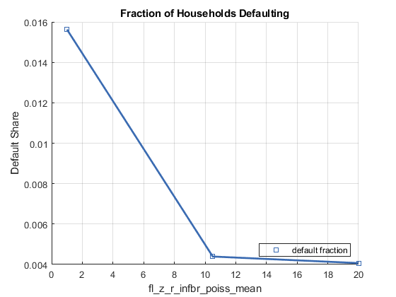

Contents
Specify which Simulation
it_size_type = 3;
ar_it_test_grp = [3, 8, 9];
it_simu_vec_len = 3;
st_test_subfolder = 'ff_ipwkbzr_ds_vecsv/test_forinf';
Recompose Path and Load Mat File
[~, support_map] = ffs_ipwkbzr_fibs_set_default_param(4);
st_matimg_path_root = support_map('st_matimg_path_root');
st_mat_test_path = [st_matimg_path_root '/test/' st_test_subfolder '/mat/'];
st_mat_test_prefix = [''];
st_mat_test_name_main = ['res'];
st_mat_test_suffix = ['g' strrep(num2str(ar_it_test_grp), ' ', '') ...
'_t' num2str(it_size_type) 'l' num2str(it_simu_vec_len)];
st_file_name = [st_mat_test_prefix st_mat_test_name_main st_mat_test_suffix];
st_load_path_full = strcat(st_mat_test_path, st_file_name);
disp(st_load_path_full);
load(st_load_path_full)
C:/Users/fan/CodeDynaAsset//m_fibs//test/ff_ipwkbzr_ds_vecsv/test_forinf/mat/resg389_t3l3
Controls
bl_graph_onebyones = true;
Specify X Variables
ar_st_vars2chg_all = {'fl_b_bd', 'fl_c_min', 'fl_z_r_infbr_poiss_mean', ...
'fl_beta', 'fl_crra', 'fl_z_rho', 'fl_z_sig', ...
'fl_r_fbr', 'fl_forbrblk_gap'};
ar_st_vars2chg = ar_st_vars2chg_all(ar_it_test_grp);
Specify Outcome Variables to Plot
[it_plot_n, it_plot_rows, it_plot_cols] = deal(5,2,3);
cl_ar_st_variablenames = cell([it_plot_n,1]);
cl_ar_st_legend = cell([it_plot_n,1]);
cl_ar_st_colnames = cell([it_plot_n,1]);
cl_st_title = cell([it_plot_n,1]);
cl_st_ytitle = cell([it_plot_n,1]);
for it_plot=1:1:it_plot_n
if (it_plot == 1)
ar_st_variablenames_plot = {'cl_mt_pol_b_bridge', 'cl_mt_pol_inf_borr_nobridge',...
'cl_mt_pol_for_borr', 'cl_mt_pol_for_save'};
ar_st_legend_plot = {'sum bridge','sum inf (not bridge)','sum for borr','sum for save'};
ar_st_colnames_plot = repmat({'mean'}, [1, length(ar_st_variablenames_plot)]);
st_title = 'Borrowing and Savings Volumns';
st_ytitle = 'Total Levels';
elseif (it_plot == 2)
ar_st_variablenames_plot = {'cl_mt_it_for_only_nbdg', 'cl_mt_it_inf_only_nbdg',...
'cl_mt_it_frin_brr_nbdg', 'cl_mt_it_fr_brrsv_nbdg', 'cl_mt_it_frmsavng_only'};
ar_st_legend_plot = {'for only', 'inf only','for + inf borr','for borr + save','save only'};
ar_st_colnames_plot = repmat({'mean'}, [1, length(ar_st_variablenames_plot)]);
st_title = 'Formal and Informal Participation';
st_ytitle = 'Aggregate Participation Probabilities';
elseif (it_plot == 3)
ar_st_variablenames_plot = repmat({'cl_mt_pol_c'}, [1, 6]);
ar_st_colnames_plot = {'p1', 'p25', 'p50', 'mean', 'p75', 'p99'};
ar_st_legend_plot = ar_st_colnames_plot;
st_title = 'Consumption Percentiles';
st_ytitle = 'C Distribution';
elseif (it_plot == 4)
ar_st_variablenames_plot = {'cl_mt_pol_k', 'cl_mt_pol_a_principleonly', 'cl_mt_coh', 'cl_mt_pol_c'};
ar_st_legend_plot = {'risky k', 'save/br=principle', 'coh=wealth', 'consumption'};
ar_st_colnames_plot = repmat({'mean'}, [1, length(ar_st_variablenames_plot)]);
st_title = 'Aggregate Outcomes (k,a,c,wealth)';
st_ytitle = 'Aggregate Levels';
elseif (it_plot == 5)
ar_st_variablenames_plot = {'cl_mt_pol_c'};
ar_st_legend_plot = {'default fraction'};
ar_st_colnames_plot = repmat({'pYisMINY'}, [1, length(ar_st_variablenames_plot)]);
st_title = 'Fraction of Households Defaulting';
st_ytitle = 'Default Share';
end
cl_ar_st_variablenames{it_plot} = ar_st_variablenames_plot;
cl_ar_st_legend{it_plot} = ar_st_legend_plot;
cl_ar_st_colnames{it_plot} = ar_st_colnames_plot;
cl_st_title{it_plot} = st_title;
cl_st_ytitle{it_plot} = st_ytitle;
end
Figure 1 Stats Formal and Informal
close all;
ar_sub_j = 1:1:3;
for sub_j = ar_sub_j
it_test_grp = ar_it_test_grp(sub_j);
if (~bl_graph_onebyones)
figure('PaperPosition', [0 0 it_plot_cols*7 it_plot_rows*4]);
else
end
mt_cur_data = cl_tb_outcomes_meansdperc_wthinfo{sub_j};
st_x_label = ar_st_vars2chg_all{it_test_grp};
Get x variable
st_x_var = ar_st_vars2chg_all{it_test_grp};
Loop over Subplots
for it_plot=1:1:it_plot_n
Subplot 1
if (bl_graph_onebyones)
figure('PaperPosition', [0 0 7 4]);
else
subplot(it_plot_rows,it_plot_cols,it_plot);
end
hold on;
st_legend_loc = 'southeast';
blue = [57 106 177]./255;
red = [204 37 41]./255;
black = [83 81 84]./255;
green = [62 150 81]./255;
brown = [146 36 40]./255;
purple = [107 76 154]./255;
cl_colors = {blue, red, black, ...
green, brown, purple};
cl_scatter_shapes = {'s','x','o','d','p','*'};
cl_linestyle = {'-','-','-','-','-','-'};
it_sca_bs = 3;
cl_scatter_csizes = {10*it_sca_bs, 10*it_sca_bs, 10*it_sca_bs, 10*it_sca_bs, 10*it_sca_bs, 10*it_sca_bs};
it_line_bs = 2;
cl_line_csizes = {1*it_line_bs, 1*it_line_bs, 1*it_line_bs, 1*it_line_bs, 1*it_line_bs, 1*it_line_bs};
cl_legend = cl_ar_st_legend{it_plot};
it_graph_counter = 0;
ls_chart = [];
for it_fig = 1:length(cl_ar_st_variablenames{it_plot})
it_graph_counter = it_graph_counter + 1;
it_csize = cl_scatter_csizes{it_fig};
ar_color = cl_colors{it_fig};
st_shape = cl_scatter_shapes{it_fig};
st_lnsty = cl_linestyle{it_fig};
st_lnwth = cl_line_csizes{it_fig};
ar_st_variablenames_plot = cl_ar_st_variablenames{it_plot};
ar_st_colnames_plot = cl_ar_st_colnames{it_plot};
ar_cur_rows = strcmp(mt_cur_data.variablenames, ar_st_variablenames_plot(it_fig));
ar_cur_cols = ar_st_colnames_plot(it_fig);
ar_y = mt_cur_data{ar_cur_rows, ar_cur_cols};
ar_x = mt_cur_data{ar_cur_rows, st_x_var};
ls_chart(it_graph_counter) = scatter(ar_x', ar_y', it_csize, ar_color, st_shape);
line = plot(ar_x, ar_y);
line.HandleVisibility = 'off';
line.Color = ar_color;
line.LineStyle = st_lnsty;
line.HandleVisibility = 'off';
line.LineWidth = st_lnwth;
cl_legend{it_graph_counter} = cl_legend{it_fig};
end
legend(ls_chart, cl_legend, 'Location', st_legend_loc, 'color', 'none');
grid on;
title(strrep(cl_st_title{it_plot}, '_', '\_'));
ylabel(strrep(cl_st_ytitle{it_plot}, '_', '\_'));
xlabel(strrep(st_x_label, '_', '\_'))

end
if (bl_graph_onebyones)
snapnow;
else
st_img_path = 'C:\Users\fan\CodeDynaAsset\m_fibs\m_ipwkbzr_test\mat\';
st_file_name = ['img1_s' num2str(it_size_type) '_m' num2str(sub_j)];
saveas(gcf, strcat(st_img_path, st_file_name));
end
end